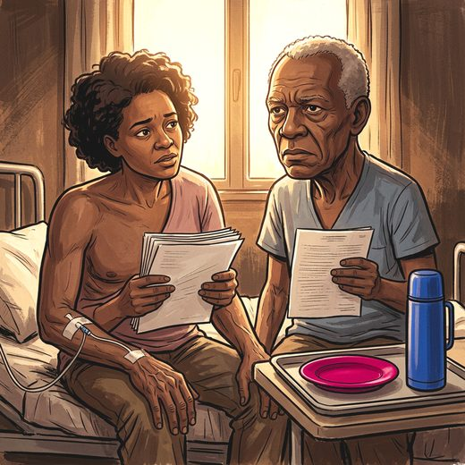

Consulta rápida à beira do leito
Condutas, doses e interações.
Referências da aula · 11
- 2023 American Geriatrics Society Beers Criteria® Update Expert Panel. American Geriatrics Society 2023 updated AGS Beers Criteria® for potentially inappropriate medication use in older adults. J Am Geriatr Soc. 2023;71(7):2052-81. PMID 37139824. doi:10.1111/jgs.18372.PubMedDOI
- O'Mahony D, Cherubini A, Guiteras AR, Denkinger M, Beuscart JB, Onder G, et al. STOPP/START criteria for potentially inappropriate prescribing in older people: version 3. Eur Geriatr Med. 2023;14(4):625-32. PMID 37256475. doi:10.1007/s41999-023-00777-y.PubMedDOI
- Livingston G, Huntley J, Liu KY, Costafreda SG, Selbæk G, Alladi S, et al. Dementia prevention, intervention, and care: 2024 report of the Lancet standing Commission. Lancet. 2024;404(10452):572-628. PMID 39096926. doi:10.1016/S0140-6736(24)01296-0.PubMedDOI
- Schneider LS, Dagerman KS, Insel P. Risk of death with atypical antipsychotic drug treatment for dementia: meta-analysis of randomized placebo-controlled trials. JAMA. 2005;294(15):1934-43. PMID 16234500. doi:10.1001/jama.294.15.1934.PubMedDOI
- Wang PS, Schneeweiss S, Avorn J, Fischer MA, Mogun H, Solomon DH, et al. Risk of death in elderly users of conventional vs atypical antipsychotic medications. N Engl J Med. 2005;353(22):2335-41. PMID 16319382. doi:10.1056/NEJMoa052827.PubMedDOI
- Ballard C, Hanney ML, Theodoulou M, Douglas S, McShane R, Kossakowski K, et al. The dementia antipsychotic withdrawal trial (DART-AD): long-term follow-up of a randomised placebo-controlled trial. Lancet Neurol. 2009;8(2):151-7. PMID 19138567. doi:10.1016/S1474-4422(08)70295-3.PubMedDOI
- Inouye SK, Westendorp RGJ, Saczynski JS. Delirium in elderly people. Lancet. 2014;383(9920):911-22. PMID 23992774. doi:10.1016/S0140-6736(13)60688-1.PubMedDOI
- Nikooie R, Neufeld KJ, Oh ES, Wilson LM, Zhang A, Robinson KA, et al. Antipsychotics for treating delirium in hospitalized adults: a systematic review. Ann Intern Med. 2019;171(7):485-95. PMID 31476770. doi:10.7326/M19-1860.PubMedDOI
- Rochon PA, Gurwitz JH. Optimising drug treatment for elderly people: the prescribing cascade. BMJ. 1997;315(7115):1096-9. PMID 9366745. doi:10.1136/bmj.315.7115.1096.PubMedDOI
- Brigo F, Erro R, Marangi A, Bhatia K, Tinazzi M. Differentiating drug-induced parkinsonism from Parkinson's disease: an update on non-motor symptoms and investigations. Parkinsonism Relat Disord. 2014;20(8):808-14. PMID 24935237. doi:10.1016/j.parkreldis.2014.05.011.PubMedDOI
- McKeith IG, Boeve BF, Dickson DW, Halliday G, Taylor JP, Weintraub D, et al. Diagnosis and management of dementia with Lewy bodies: fourth consensus report of the DLB Consortium. Neurology. 2017;89(1):88-100. PMID 28592453. doi:10.1212/WNL.0000000000004058.PubMedDOI
Documentos oficiais
Leis e publicações do Ministério da Saúde sobre o cuidado da pessoa idosa, de acesso livre.
Abrir os documentos